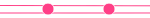

Условные обозначения
Линии
Обычная линия метро
Линия на эстакаде

Железнодорожная городская линия
Проектная или строящаяся линия
Станции
Обычная станция метро
Проектная или строящаяся станция
Закрытая станция
Переходы
Подземный переход метро
Наземное сообщение
Кроссплатформенная станция